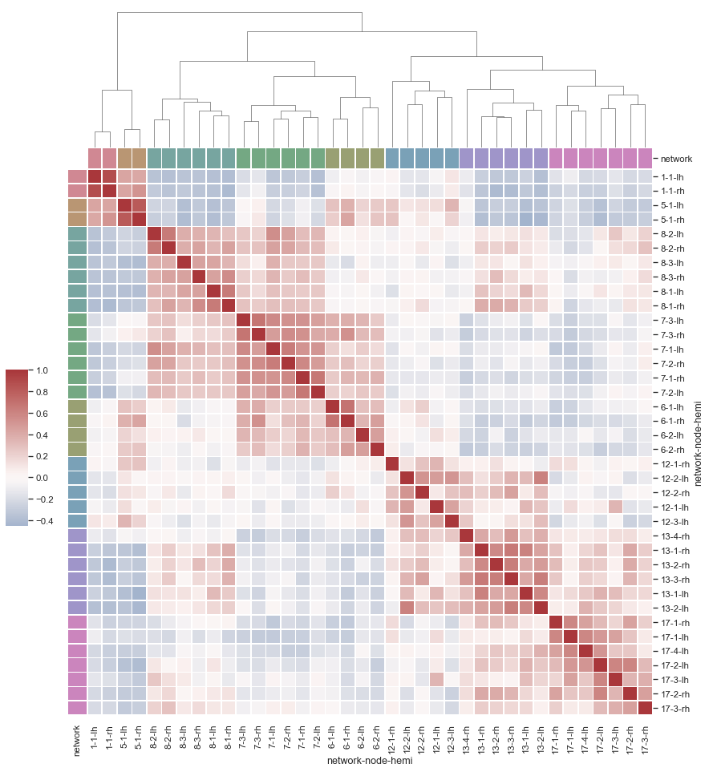

Discovering structure in heatmap data¶
seaborn components used: set_theme(), load_dataset(), husl_palette(), clustermap()
import pandas as pd
import seaborn as sns
sns.set_theme()
# Load the brain networks example dataset
df = sns.load_dataset("brain_networks", header=[0, 1, 2], index_col=0)
# Select a subset of the networks
used_networks = [1, 5, 6, 7, 8, 12, 13, 17]
used_columns = (df.columns.get_level_values("network")
.astype(int)
.isin(used_networks))
df = df.loc[:, used_columns]
# Create a categorical palette to identify the networks
network_pal = sns.husl_palette(8, s=.45)
network_lut = dict(zip(map(str, used_networks), network_pal))
# Convert the palette to vectors that will be drawn on the side of the matrix
networks = df.columns.get_level_values("network")
network_colors = pd.Series(networks, index=df.columns).map(network_lut)
# Draw the full plot
g = sns.clustermap(df.corr(), center=0, cmap="vlag",
row_colors=network_colors, col_colors=network_colors,
dendrogram_ratio=(.1, .2),
cbar_pos=(.02, .32, .03, .2),
linewidths=.75, figsize=(12, 13))
g.ax_row_dendrogram.remove()